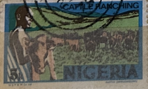
| SOURCE | TITLE| IMAGE MATCH | click to source page |
| HipStamp | Nigeria # 294 5k Cattle Ranching | Africa - Nigeria, General Issue Stamp / HipStamp | 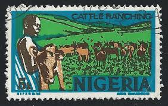 |
| Blogger.com | Nigerian Stamps and Postal History |  |
| eBay | Nigeria Agriculture Farm Animals Cuttle Cows stamp 1968 A-24 | eBay | 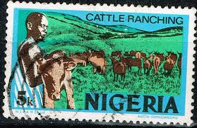 |
| Day 20 | 'Massacre' Prompt: Sprout 20.10.20 | 🇳🇬💔🕊🕯 A timeline: ~ live ammunition fired by Nigerian army ~ emptied shells picked-off the floor ~ peaceful protesters' bodies picked up and thrown | ||
| Central Bank of Nigeria | B A D B A D E B E B | |
| Dreamstime.com | NIGERIA - CIRCA 1961: a Stamp Printed in Nigeria Shows Oyo Carver, Circa 1961. Editorial Photography - Image of closeup, envelope: 198133112 | 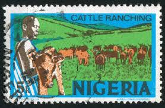 |
| Eric Okoruwa - XLR8 Limited. | LinkedIn | 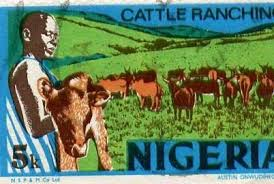 | |
| Etsy | Nigeria Wall Art - Etsy | 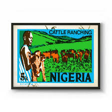 |
| Etsy | Nigeria Farming Art Print: Vintage Pan African Travel Poster - Etsy | 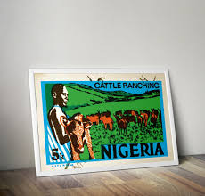 |
| Dreamstime.com | 101 Nigeria Circa Stock Photos - Free & Royalty-Free Stock Photos from Dreamstime | 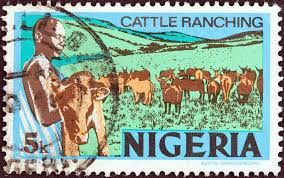 |
| HipStamp | Search "5k" in Africa > Nigeria / HipStamp | 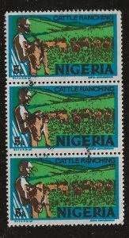 |
| Giphy | Burna Boy GIFs on GIPHY - Be Animated | 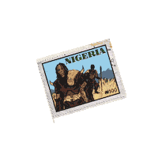 |
| HipStamp | Nigeria Scott 294 Used | Africa - Nigeria, General Issue Stamp / HipStamp | 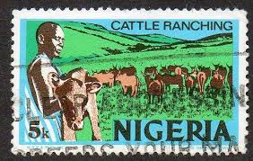 |
| HipStamp | Nigeria 1983 National Youth Service Corps 10th Anniversar... | Africa - Nigeria, Stamp / HipStamp | 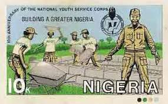 |
| eBay | Flags, National Emblems Nigerian Stamps (1960-Now) for sale | eBay | 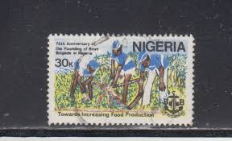 |
| Discogs | Nigeria 70 (The Definitive Story of 1970's Funky Lagos) – 3 x CD (slipcase, Compilation), 2001 [r578408] | Discogs | 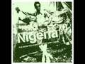 |
| Nairaland | Checkout 1970s Issue Nigeria Stamps - Politics - Nigeria | 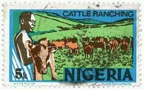 |
| There has been an unknown number of postage stamps featuring Volkswagens around the world, but Nigeria may have the only one with the Beetle during manufacturing! Volkswagen of Nigeria Ltd. was established | 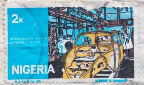 | |
| Etsy | Nigeria Farming Art Print: Vintage Pan African Travel Poster - Etsy UK | |
| Etsy | African Art, Nigerian Art, African Wall Art, Black Art, African Man, Farmhouse Wall Decor, African Art, Black Man Print, Afrocentric Art - Etsy Canada | 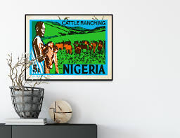 |
| Shutterstock | Nigeria Circa 1960s Stamp Printed Nigeria Stock Photo 70881799 | Shutterstock | 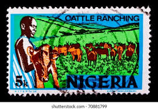 |
| commonwealthstamps.com | Nigeria 1973 SG 282a Cattle Ranching Fine Used | 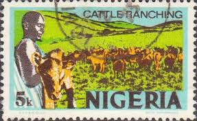 |
| Stanford University | Studying state expansion in sub-Saharan Africa | King Center on Global Development | 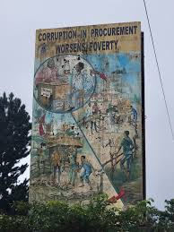 |
| Shutterstock | Nigeria Circa 1973 Stamp Printed Nigeria Stock Photo 78379894 | Shutterstock | 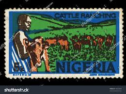 |
| Alamy | Cattle nigeria hi-res stock photography and images - Alamy | 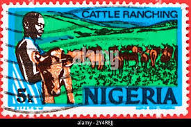 |
| Colnect | Stamp: Eko Bridge - photogravure (Nigeria(Economy) Mi:NG 288IY,Sn:NG 306a,Yt:NG 296A,Sg:NG 289 📮 | 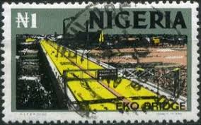 |
| Etsy | Nigeria Farming Art Print: Vintage Pan African Travel Poster - Etsy Australia | |
| ProBoards | Nigeria: 1973-1986 Definitive Issue | The Stamp Forum (TSF) | 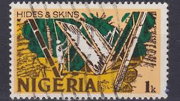 |
| HipStamp | Nigeria - #294 Cattle Ranching - Used | Africa - Nigeria, General Issue Stamp / HipStamp | 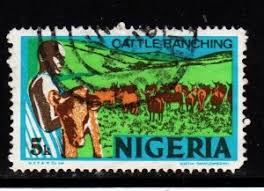 |
| Brixton Chrome | The 1973-1986 Definitive Issue – Brixton Chrome | 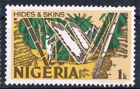 |
| HipStamp | Nigeria Sc# 294a Used Cattle Ranching imprint N.S.P & M.Co Ltd see details &... | Africa - Nigeria, Stamp / HipStamp | 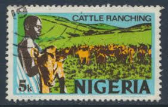 |
| Dreamstime.com | Old Goatherd Stock Photos - Free & Royalty-Free Stock Photos from Dreamstime | 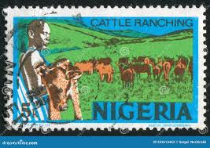 |
| Everypixel.com | Cattle ranching in nigeria - Stock Image - Everypixel | 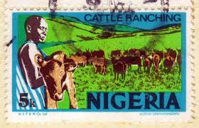 |
| Stamp Collecting Blog | Nigeria 1973 definitive postage stamps – pt. III | 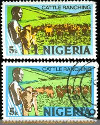 |
| NOWNESS | Black Star: Rebirth Is Necessary | NOWNESS | 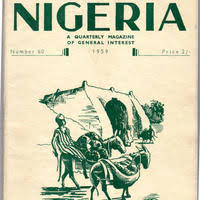 |
| X | Ursula Antwi-Boasiako (@ursutik) / Posts / X | 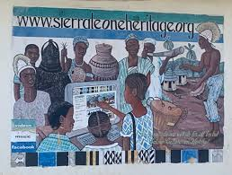 |
| Blogger.com | The 1973-1986 Definitive Issue | 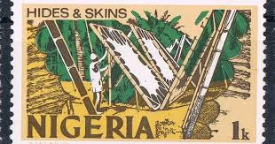 |
| commonwealthstamps.com | Nigeria 1983 SG 464 Boys Brigade Fine Used | 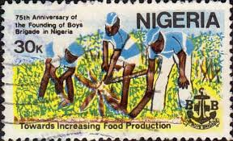 |
| Getty Images | A view of memorials inside the Capilla de la Memoria , where people... News Photo - Getty Images | 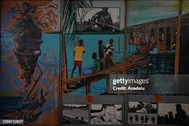 |
| Dreamstime.com | Cattle Ranching, Economy Serie, Circa 1976 Editorial Stock Image - Image of economy, 1976: 135313189 | 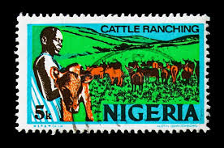 |
| eBay | Used Postage Nigerian Stamps (1960-Now) for sale | eBay | 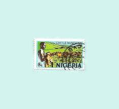 |
| Tumblr | 1959 Nigeria magazine cover More Vintage Nigerian photos – @nigerianostalgia on Tumblr | 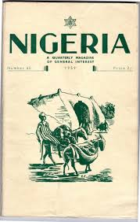 |
| X | A Volkswagen motor assembly plant once existed in Nigeria. I recall seeing an abandoned one in Owerri, Imo state. Also in the pics - activities on a port, oil exploration, coal mining | 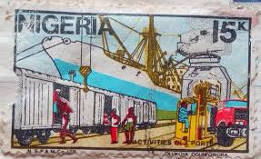 |
| Etsy | Nigeria Fishing Poster: Vintage Pan African Travel Art Print - Etsy Israel | 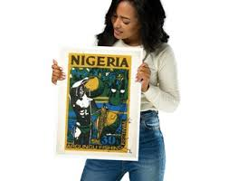 |
| Dreamstime.com | Nigeria on postage stamps editorial stock image. Image of monument - 146663394 | 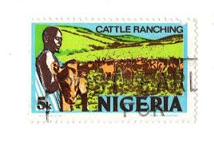 |
| Etsy | Nigeria Fishing Poster: Vintage Pan African Travel Art Print - Etsy | 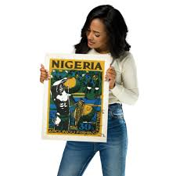 |
| YouTube | NewsinNaija Tv - YouTube | |
| SPEAK OUT NIGERIA | Facebook | ||
| X | Woye (@woyeproductionz) / Posts / X | |
| International Monetary Fund | IMF | Bringing Women into the Economic Mainstream | |
| qz.com | Ghana is safe and stable, but its young people are still risking their lives to cross to Europe | 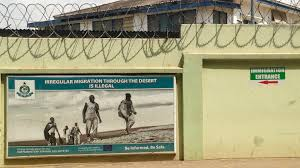 |
| I had the pleasure of meeting up with friends celebrating Sudan Senses at the M Shed in Bristol. This weekend celebrating all things Sudanese was organised by the women for the benefit | 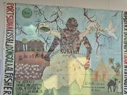 | |
| Archive | Nigeria : dancing on the brink : Campbell, John, 1944- : Free Download, Borrow, and Streaming : Internet Archive |  |
| Shutterstock | Equator Monument Kayabwe Uganda Africa 2016Arkivfotografi762959461 | Shutterstock | 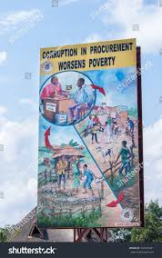 |
| groseducationalmedia.ca | Nigeria | 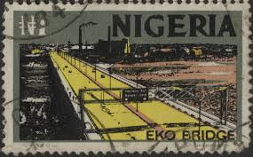 |
| What are some tips for creating a 48' by 48' mix media painting? |  | |
| TikTok | Real Name for Ghana Must Go Bag | TikTok | 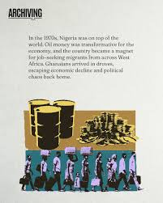 |
| Dreamstime.com | Vintage Postage Stamps from Nigeria. Stock Illustration - Illustration of food, nigeria: 288293748 | 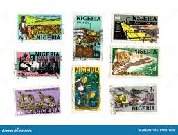 |
| aloradunque.org | CATHOLIC DIOCESE OF ORLU | 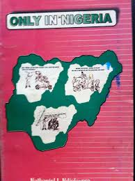 |